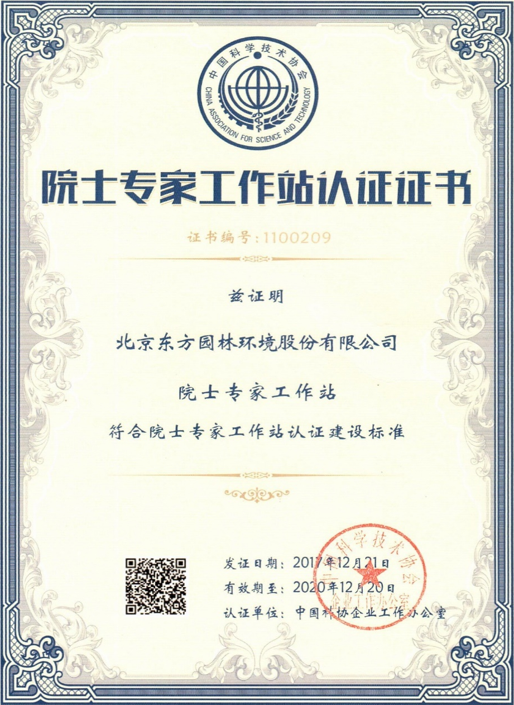

院士专家工作站
①依托国内行业院士、知名专家
②实施产学研合作，培养创新人才
③推进产学研联合
④在实践中集聚、培养高层次人才和创新人才
⑤建设行业创新型科技人才队伍
⑥服务行业技术创新
⑦助力生态修复行业技术引领
东方园林一直重视与国内外高校合作，将生态修复领域内的新技术转化实践，目前与国内著名高校成立有北京大学东方园林城市讲席教授基金、清华大学东方生态战略规划研究中心、中国人民大学生态金融研究中心、北京林业大学中国生态文明研究院等。
院士专家
-

孙鸿烈 院士
土地资源
-

刘鸿亮 院士
环境工程
-
刘昌明 院士
水文水资源
-

丁德文 院士
海洋生态
-
秦大河 院士
全球变化
-
侯立安 院士
环境工程
-
曲久辉 院士
水污染控制
-

傅伯杰 院士
土地评价
-

彭苏萍 院士
矿井地质
姓名
职务/职称
专业特长
安建平
教授博导
信息与通信工程
白仲科
教授/院长博导
矿山土地修复
蔡典雄
研究员
农业水资源
蔡立力
高级城市规划师
城乡规划设计与政策研究
曹文洪
教授级高工/所长
水动力、河湖冲刷、淤积、泥沙
陈建成
教授/院长博导
经济管理
陈敏建
教授级高工/副总工
水利、水资源、生态
陈同斌
研究员
土壤修复、固体废弃资源化
崔保山
教授
湿地工程
邓卫
教授
城市规划
丁国栋
教授博导
荒漠化防治
董观志
教授/副院长
旅游规划
董丽
教授博导
园林植物
高吉喜
研究员
自然生态、污染生态、城市生态
高俊才
司长
农林政策
高永
教授博导
荒漠化防治
高志海
研究员
林业遥感技术
葛继稳
教授
环境（湿地）生态学、保护生态学
郭有智
教授/主任
海水淡化、膜与水处理技术、水生态
郝芳华
教授/副校长
环境评价规划、水资源保护与规划
胡振琪
教授/所长博导
土地复垦
黄锦楼
副研究员
生态修复、生态工程技术集成
黄占斌
教授博导
环境生物工程
贾黎民
教授博导
森林培育
江泽平
研究员
森林培育
雷坤
研究员
环境海洋学
李发生
首席专家
污染场地风险评价与环境修复
李金恒
教授/院长
城市规划、产业规划
李俊生
博士研究员
生物多样性
李原园
教授级高工/副院长
大流域规划、治理
梁生康
教授/主任
海洋保护
林文琪
副教授
城市规划
刘春阳
研究员
信息安全
刘俊新
研究员
水污染控制与污水资源化技术
刘连友
教授博导
自然地理
刘永定
教授
水生生物学、环境生物学研究
马克平
教授
生物多样性
全占军
研究员
生态治理
沈凤生
教授级高工/院长
水利工程
孙建新
教授博导
森林生态
汪俊三
教授级高工
人工湿地研究和工程设计
王明玉
教授/主任
水资源
王向东
教高
灾害及河流泥沙
王再文
教授/处长
经济管理学
魏源送
研究员
河流生态治理、污水处理
吴振斌
研究员
淡水生态与生物技术、植物生态学
席北斗
研究员
固体废物处理处置与面源污染控制
肖文发
研究员/所长
生态环境保护
谢映霞
教授级高工
城市基础设施规划、生态环境规划
严登华
教授级高工
气候变化、生态水文模拟与调控
杨红生
教授
养殖生态学、生态免疫学
杨锐
教授
景观规划设计、风景旅游规划设计
杨文斌
研究员、首席专家
土地沙漠化及其防治
尹澄清
研究员
城市面源污染，水源湿地净化
于云江
研究员博导
污染评估
余新晓
教授
水土保持与荒漠治理
俞孔坚
教授/院长
国土生态、景观设计
张远
研究员
河流生态学、流域生态管理
张凤荣
教授/主任
土地资源
张福锁
教授/院长
农业资源与环境
张富龙
研究员
生物农药
张华新
研究员/处长
林木遗传育种、有耐盐碱树种选育
张列宇
研究员
水环境系统工程
张明祥
教授
大自然保护、湿地修复
张强
研究员
农业资源与环境
张毅敏
研究员
流域生态保护与水污染控制中心
张志翔
教授/馆长博导
植物分类学
赵廷宁
教授
防沙治沙、水土保持、生态环境建设
赵新利
研究员
社会经济
周建军
教授
水利工程、流域治理
周金星
教授
水土保持、生态修复、石漠化治理
朱党生
教授级高工/副院长
水利工程
朱伟
教授
河、湖水环境治理
朱育帆
教授
景观规划设计、自然和文化遗产保护
庄绪亮
研究员
生物质资源与环境微生物